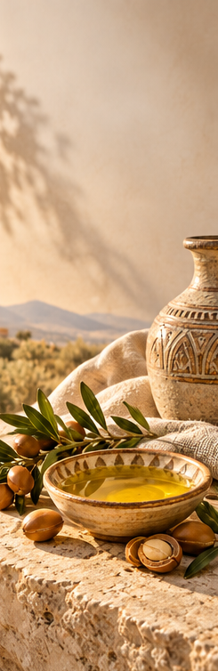
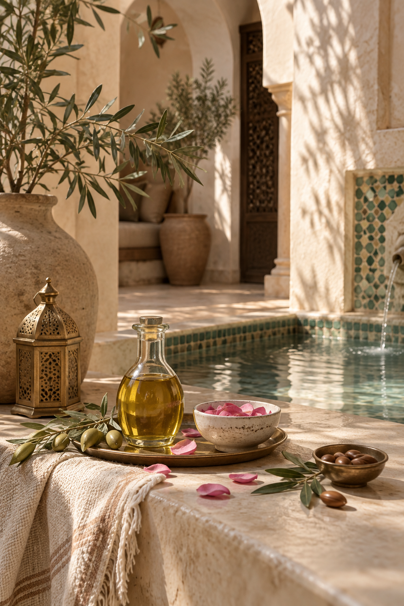
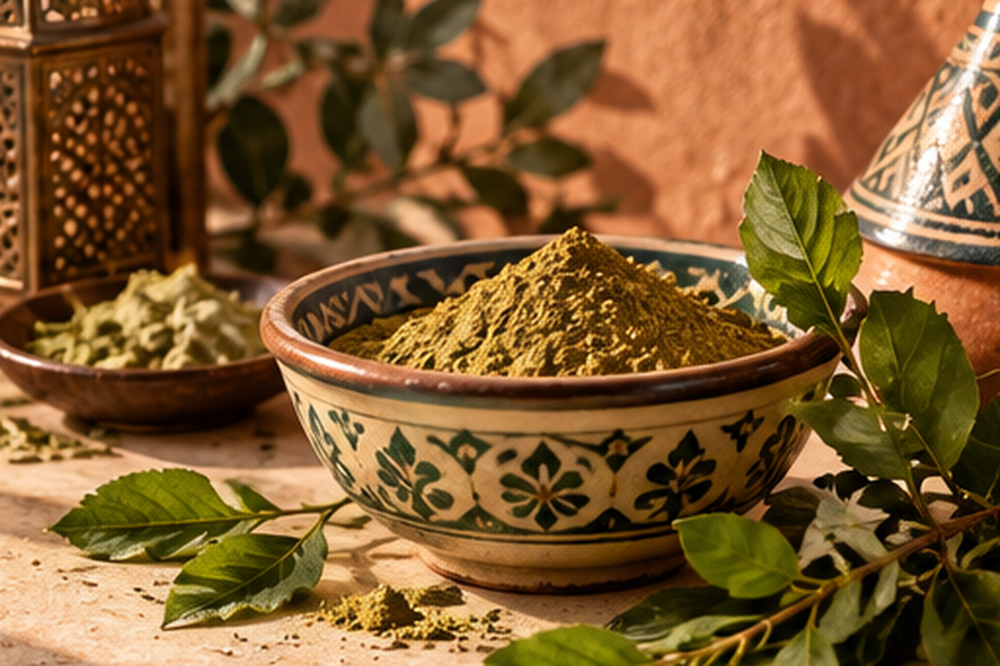
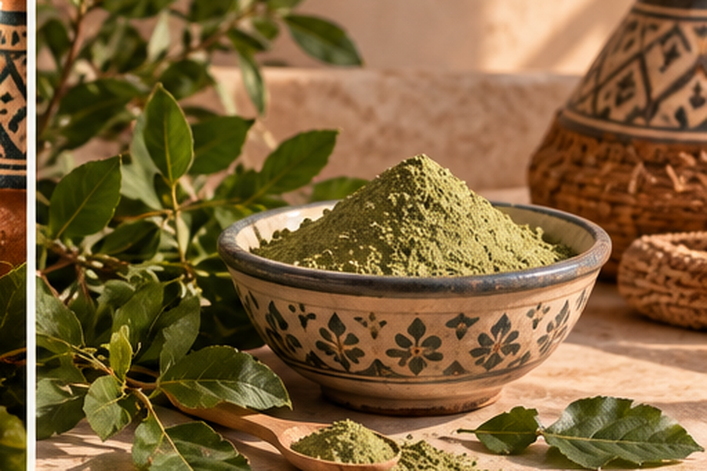
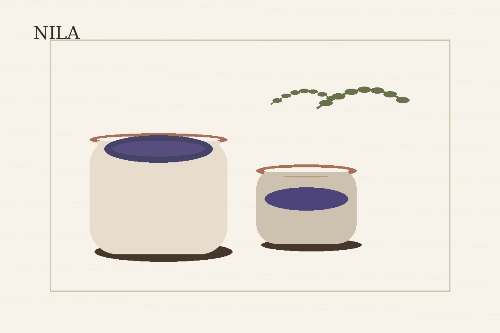
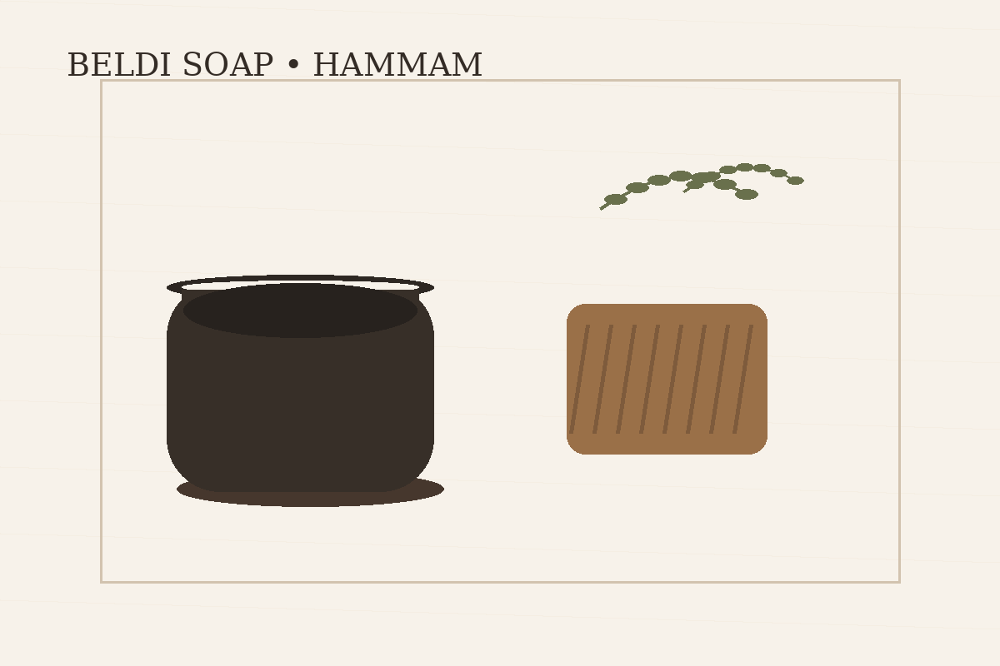
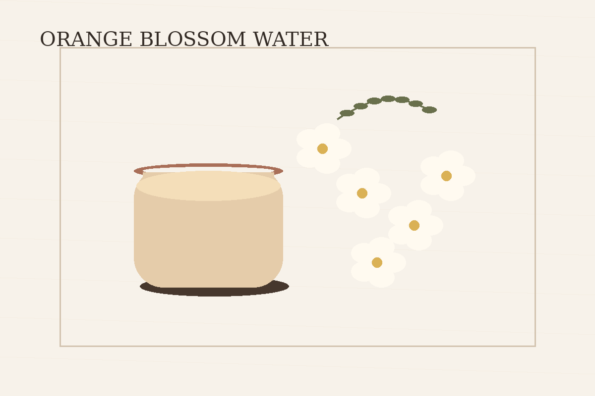
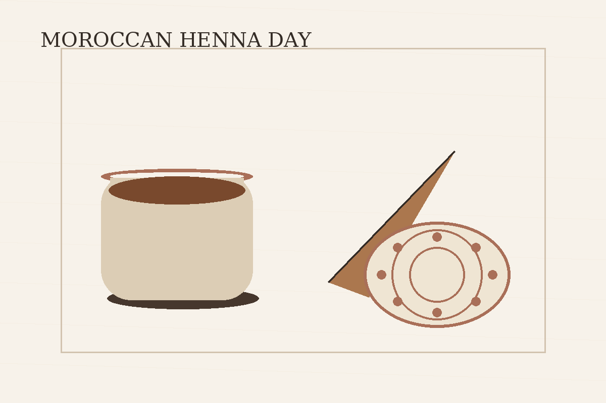
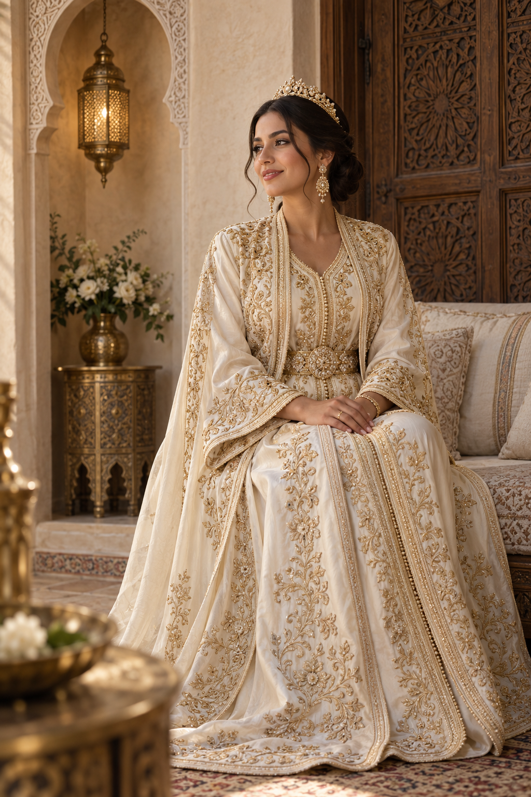
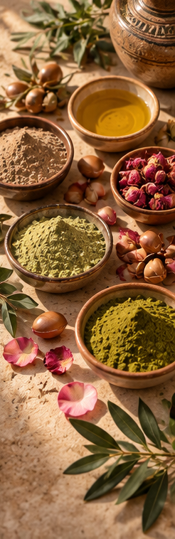

Argan Oil Ritual
The iconic Moroccan oil used in beauty and hair-care routines.
Discover argan oil →
Ancient traditions • Modern self-care
Explore timeless Moroccan beauty traditions, natural ingredients and self-care rituals inspired by the hammam, argan oil, rose water, ghassoul, henna and more.
Explore the ritualsMoroccan self-care
From nourishing oils to traditional cleansing rituals, discover the ingredients and practices behind Moroccan beauty.

The iconic Moroccan oil used in beauty and hair-care routines.
Discover argan oil →
A fragrant botanical tradition for a simple, refreshing routine.
Discover rose water →
Discover the mineral-rich Moroccan clay traditionally used for cleansing.
Discover ghassoul →
A traditional bathing ritual built around cleansing, steam and exfoliation.
Discover hammam →
Explore the cultural and beauty traditions surrounding Moroccan henna.
Discover henna →
A botanical hair-care tradition featuring powdered sidr leaves.
Discover sidr →
Discover the traditional Moroccan beauty ritual surrounding nila, a botanical ingredient associated with skincare traditions.
Discover nila →
Explore the traditional role of Moroccan black soap in the hammam ritual.
Discover beldi soap →
Discover the fragrant Moroccan tradition of orange blossom water in beauty and self-care.
Discover orange blossom water →
Explore the traditions, preparation and beauty rituals surrounding a Moroccan henna day.
Discover the henna day ritual →
Explore a thoughtful introduction to wedding day beauty rituals, personal preparation and meaningful moments of care.
Discover wedding day rituals →
Natural Moroccan ingredients
Moroccan beauty traditions are built around a small collection of natural ingredients and carefully preserved rituals. Explore what they are, how they are traditionally used and how they fit into a modern self-care routine.
Explore the collectionAbout Moroccan Beauty Rituals
Moroccan Beauty Rituals is a curated guide to traditional Moroccan beauty practices and ingredients. Our goal is to make these rituals easier to understand and discover while connecting timeless traditions with modern self-care.